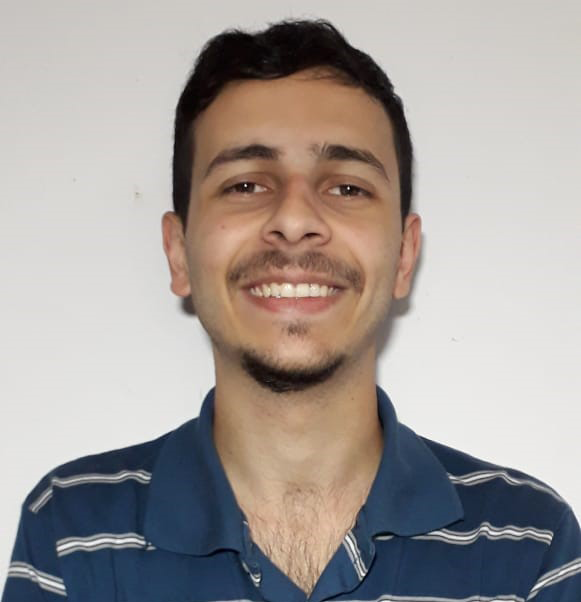

- Francisco Daniel Bolzan Aramburu
- Web Developer & UX/UI Designer
- La Plata, Buenos Aires
Experiencia laboral
Tutor UX/UI
Coderhouse | Contrato temporal | Junio 2021 - Presente
Wordpress developer
Quadlayers | Contrato temporal | La Plata | Febrero 2021
Estudios formales
Bootcamp de Programación FullStack
NUCBA | Marzo 2021 - Presente
Licenciatura en Sistemas
UNLP | 2020 - 2021
Licenciatura en Diseño Multimedial
UNLP | 2016 - 2019
Cursos de formación
Diseño UX/UI
NUCBA | 2021 | Ver proyecto final
Data Analytics
NUCBA | 2021
Creación de una Marca desde cero
Crehana | 2020 | Ver proyecto final
Diseño Web Front End
Sicos Informática | La Plata | 2019
Programación en Java
Sicos Informática | La Plata | 2019